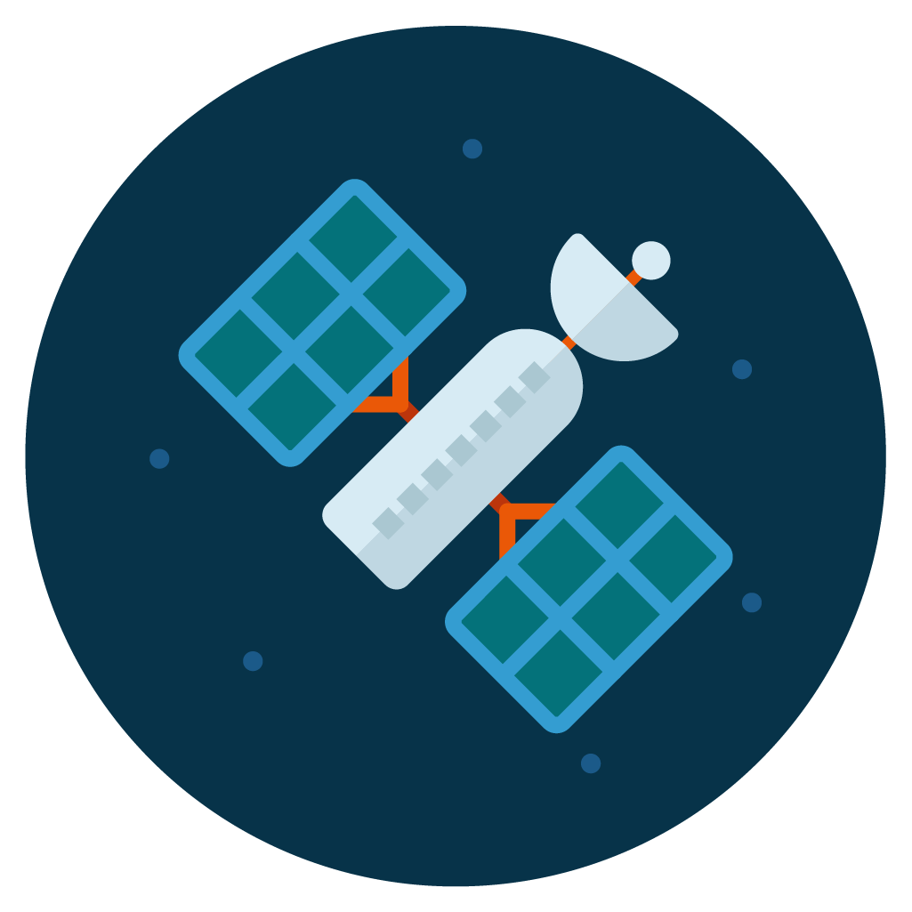
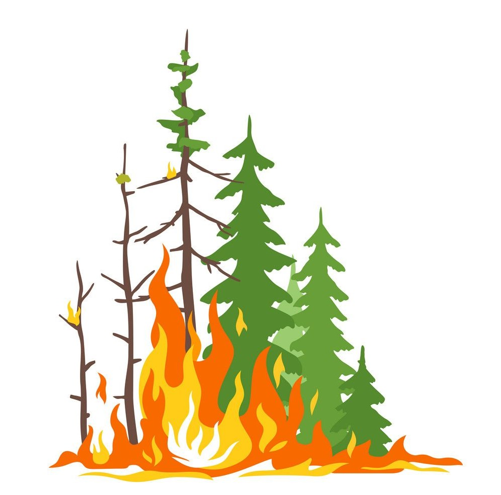

Fire Mitigation
Climate Change and Wildfires
Our planet’s warming climate is fueling a significant increase in the scope and intensity of wildfires worldwide. These fires are happening more often, for longer durations and burning larger areas. Wildfires occur when certain conditions are present and climate change increases the likelihood of each of these conditions. Wildfires require hot temperatures together with atmospherically dry conditions, they require burnable material and a spark. Since 1880, the planet has warmed by 1.9 degrees Fahrenheit and the last 5 years are the warmest on record. The warming temperatures have led to more severe episodes of drought in many places, shorter winters with less snow cover, and more prolonged hot and dry seasons. Nighttime temperatures have also increased, which means that the conditions never stop being hospitable for burning and, as a result, fires no longer slow down overnight. Global warming has destabilized weather patterns, rendering them more extreme with larger numbers of electrical lightning storms, which often create the “spark”. More droughts result in larger numbers of dead trees, which provide highly flammable fuel for wildfires. This gives rise to a vicious cycle because wildfires themselves contribute to climate change because they release large amounts of carbon emissions into the atmosphere, as well as methane gases in the instances when the wildfires occur in areas where permafrost is present.
Existing Technology for Analyzing and Predicting Wildfires
Rapid evolution in the quality and quantity of satellite data has enabled scientists to develop powerful tools for mapping and analyzing wildfires and for predicting future trends on a macro scale. However, each fire is different in its behavior, affected by varying atmospheric conditions and topography. Where there is still much work to be done is on understanding and predicting how individual wildfires will behave and therefore spread. Wildfires quickly create their own weather systems contained in the plumes of smoke, which are believed to have a role in perpetuating the fire. These fire-specific atmospheric conditions determine where the firebrands, wind-spread balls of fire, will reach, and, from there, the path of the fire. What scientists need is a mechanism that allows them to effectively see inside the cloud plumes as well as the topography, down to every tree and bush, without putting themselves in harm’s way.
LiDAR
Craig Clement, a meteorologist with San Jose University, recognizes that wildfire prediction models are not sufficiently sophisticated to factor in the rapidly changing atmospheric complexity and certainly not the evolution of firebrand dispersal. To this end, he custom built a pickup truck equipped with a LiDAR scanner that he drives as close to the fire line as possible. A LiDAR system is like a radar or sonar system except that it uses a laser beam (instead of radio or sound waves). In the context of obtaining data on wildfires, they are useful in serval ways. Concerning understanding topography and vegetation, LiDAR scanners fire their lasers at the ground and measure how long it takes for that laser beam to bounce back. Millions of these lasers are fired every second which leads to a map of extraordinarily precise data. This data gives what is essentially a very accurate 3D model of the forest down to every last tree and including every topographical variation. Equally useful and important, while the fire is raging, the laser beams from the LiDAR scanner can detect the movement and wind speed of the particulates in the plume, or smoke cloud generated by the wildfire. Because wildfires create their own atmospheric conditions, this information is very important to understand the way that the plume feeds the wildfire and influences its direction and spread. With both of these uses combined, LiDAR becomes a crucial tool in understanding the characteristics of individual wildfires and predicting their behavior. Its use will allow better modeling, in turn leading to earlier evacuations and safer conditions for firefighters, and hopefully shorter and less impactful wildfire events. However, to fully harness and utilize both these capabilities, the LiDAR scanner needs to take off, literally. The danger presented by having to drive to the fire line is very clear, and besides, the vantage point for launching these beams is limited, making the topographical analysis near impossible.
A New Application for Aircraft Based LiDAR
I propose combining the well-established use of planes in LiDAR mapping with the novel use of ground-based LiDAR wildfire analysis into a new application of this technology that will allow scientists and firefighters to work together to combat the mounting risk of wildfires more safely and effectively. I propose to create a capsule containing a LiDAR scanner as well as all the necessary computers and storage devices. This capsule will be installed on a compatible general aviation aircraft. Because this capsule is utilizing LiDAR technology, it can both map forests to detect which areas are high risk as well as gather data on the plume of a wildfire such as the wind speed and wind direction. This device is an opportunity to mitigate the effects of individual fires by equipping firefighters with more precise real-time information to allow them to take more targeted action. This information will allow them to use their resources (human and mitigation equipment and materials) more judiciously and safely to reduce the impact of the wildfire. In addition, evacuations can be undertaken further in advance, to limit the danger to local residents.

Using ML and Neural Networks in Conjunction with LiDAR
The data collected by the LiDAR scanner has further utility using machine learning and neural network applications. Machine learning uses a network of artificial neurons that mimic the functioning of a human brain called a neural network to predict the outcome of situations based on training data or to analyze data. In this case, we can use machine learning to predict the outcome of a given wildfire in ways such as area burned and locations burned. In addition, the neural network can also analyze the LiDAR data in order to find similarities among other fires.
Reducing the Impact of Wildfires on Climate Change
Limiting the scope and duration of the wildfire is beneficial in that it will reduce the climate impact each fire would have since it would burn for a shorter period and less fuel, therefore emitting fewer gases (both carbon and methane) and limiting their effect on air quality. At present, hundreds of firefighters lose their lives fighting fires and this tool should help to keep them out of harm’s way.
